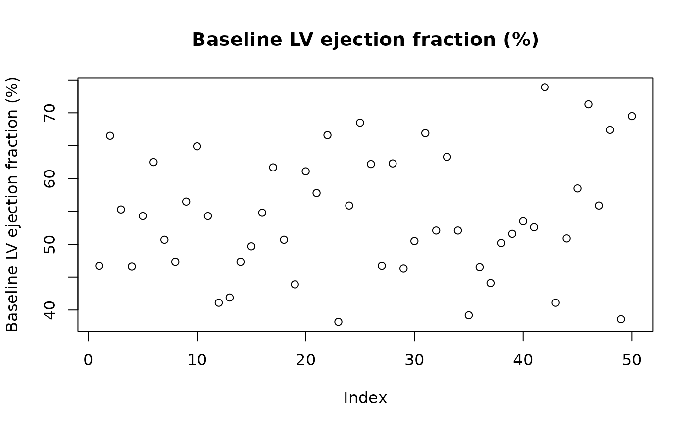

Returns the descriptive label for one variable name from a label map.
This is a safer alternative to the manual match() pattern,
providing clear errors on typos and missing variables.
Arguments
- label_map_df
A data frame with
keyandlabelcolumns, as returned bylabel_map.- variable
A single character string: the variable name to look up.
Examples
dta <- generate_survival_data(n = 50, seed = 42)
lmap <- label_map(dta)
get_label(lmap, "age")
#> [1] "Age at surgery (years)"
get_label(lmap, "hgb_bs")
#> [1] "Baseline hemoglobin (g/dL)"
# Use in plot titles
var <- "lvefvs_b"
plot(dta[[var]], main = get_label(lmap, var), ylab = get_label(lmap, var))
